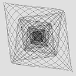
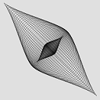
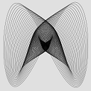
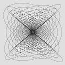
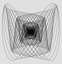

{kind=link}
Амплитуда 1-го маятника (0-200):
Амплитуда 2-го маятника (0-200):
Примеры:
|  |

|
||
|  |  | ||
|  |  |
И, наконец, последняя, но далеко не безынтересная (и даже наоборот, наиболее известная), машинка для рисования - гармонограф. В гармонографе рисунок строится колеблющимися в перпендикулярных плоскостях маятниками, к которым прикреплена ручка или карандаш (здесь возможны различные вариации, когда один из маятников качает ручку, а другой - поверхность, на которой строится рисунок; есть также реализации с тремя маятниками, в которых ручка качается в двух плоскостях, а третий маятник качает планшет с листом бумаги). Получающийся рисунок зависит от соотношения частот, амплитуды и скорости затухания колебаний маятников.
Простая и оригинальная конструкция гармонографа описана в журнале Квант №2 за 2014 год.
Здесь же, на рисунке, приведена конструкция гармонографа из Техники-Молодёжи №7 за 1965 год, а ниже представлена модель, имитирующая работу гармонографа. (Стоит отметить, что модель хорошо работает для малых колебаний маятников. При большой амплитуде колебаний реальный рисунок в общих чертах похож на то, что получается на этой страничке, но будет несколько "покривее"). Параметры необходимо задать в соответствующих полях ввода. Также представлены примеры нескольких готовых построений, после нажатия кнопки Выбрать параметры установятся так, чтобы получился указанный рисунок.
|
Отношение частот (1-10):
Амплитуда 1-го маятника (0-200): Амплитуда 2-го маятника (0-200): Примеры:
|